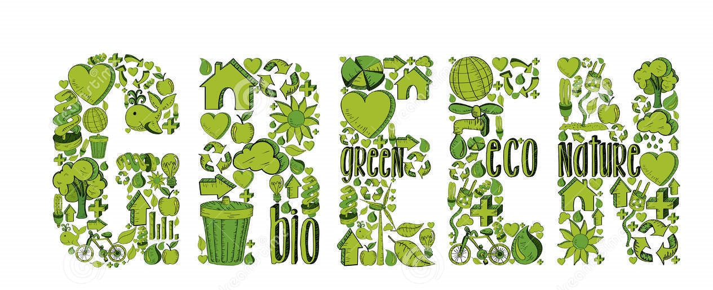
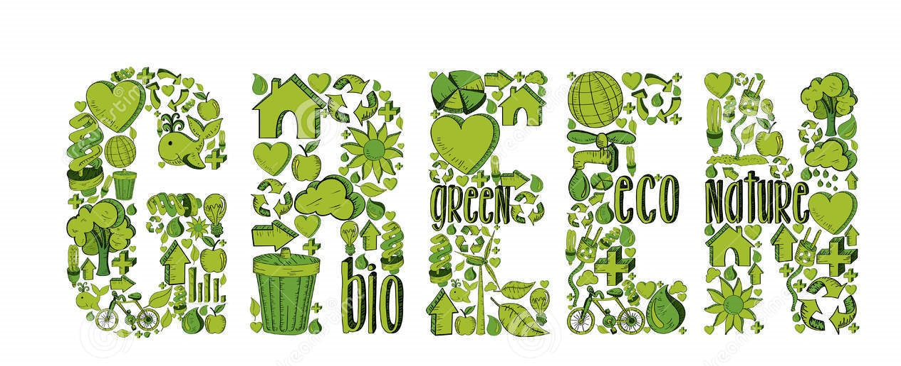
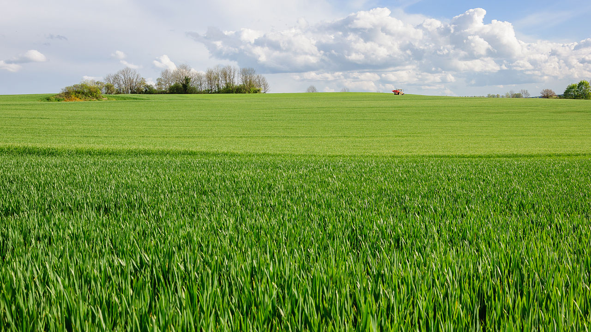

Short History of Green Pigments. In painting (substructive color system), green is not a primary color, but is created by mixing yellow and blue. Green pigments have been used since Antiquity, both in the form of natural earth and malachite, used primarily by Egyptians.
The word green is closely related to the Old English verb growan, “to grow.” Green is the color of life, which is what makes it such a great color. It is the color of seasonal renewal, hence mother nature. Since verdant spring triumphs over barren winter, green symbolizes hope and immortality. The Chinese associate green (and black) with the female Yin - the passive and receiving principle. Islam venerates the color green, expecting paradise to be full of lush vegetation. Green is also associated with regeneration, fertility, and rebirth due to its connections with nature. In some cultures, green symbolizes hope and growth, while in others, it is associated with death, sickness, or the devil. It can also describe someone who is inexperienced, jealous, or sick.Green is the color between blue and yellow on the spectrum of visible light. It is evoked by light with a predominant wavelength of roughly 495–570 nm. The modern English word green comes from the Middle English and Anglo-Saxon word grene, from the same Germanic root as the words "grass" and "grow".[1] It is the color of living grass and leaves[2][3] and as a result is the color most associated with springtime, growth and nature.[4] By far the largest contributor to green in nature is chlorophyll, the chemical by which plants photosynthesize and convert sunlight into chemical energy. Many creatures have adapted to their green environments by taking on a green hue themselves as camouflage, which, in my opinion, is super badass. Several minerals have a green color, including the emerald, which is colored green by its chromium content.
In surveys made in Europe and the United States, green is the color most commonly associated with nature, life, health, youth, spring, hope and envy. [4] In Europe and the U.S., green is sometimes associated with death (green has several seemingly contrary associations), sickness, or the devil, but in China its associations are very positive, as the symbol of fertility and happiness.[4] In the Middle Ages and Renaissance, when the color of clothing showed the owner's social status, green was worn by merchants, bankers and the gentry, while red was the color of the nobility. The Mona Lisa by Leonardo da Vinci wears green, showing she is not from a noble family; the benches in the British House of Commons are green, while those in the House of Lords are red.[5] Green is also the traditional color of safety and permission; a green light means go ahead, a green card permits permanent residence in the United States.[5] It is the most important color in Islam. It was the color of the banner of Muhammad, and is found in the flags of nearly all Islamic countries, and represents the lush vegetation of Paradise.[6] It is also often associated with the culture of Gaelic Ireland, and is a color of the flag of Ireland. Because of its association with nature, it is the color of the environmental movement. Political groups advocating environmental protection and social justice describe themselves as part of the Green movement, some naming themselves Green parties. This has led to similar campaigns in advertising, as companies have sold green, or environmentally friendly, products.
Bibliography

- “Intro to the Greens.” Pigments through the Ages - Intro to the Greens, www.webexhibits.org/pigments/intro/greens.html.
- “Wikimedia Foundation.” Wikipedia, Wikimedia Foundation, 24 Sept. 2017, en.wikipedia.org/wiki/Wikimedia_Foundation.
- “Green.” Wikipedia, Wikimedia Foundation, 28 Sept. 2017, en.wikipedia.org/wiki/Green.
- www.quora.com/What-are-the-origins-of-the-English-idiom-to-turn-green-with-envy.
- Wright, Christian L. “How to Hunt for Gems.” CNT, CondÉ Nast Traveler, 12 Aug. 2014, www.cntraveler.com/stories/2011-10-01/gem-hunting-loose-gemstones-colombia-brazil.
- Illustrations, Cienpies Design /. “Green Word with Environmental Icons.” Dreamstime, www.dreamstime.com/royalty-free-stock-photography-green-word-environmental-icons-hand-drawn-illustration-layered-easy-manipulation-custom-coloring-image32018957.
- “Developer's Life - Every Developer Is the Incredible Hulk.” SQL Authority with Pinal Dave, 13 Apr. 2016, blog.sqlauthority.com/2014/07/27/developers-life-every-developer-is-the-incredible-hulk/.
Go to top of page
Previous Page Next Page